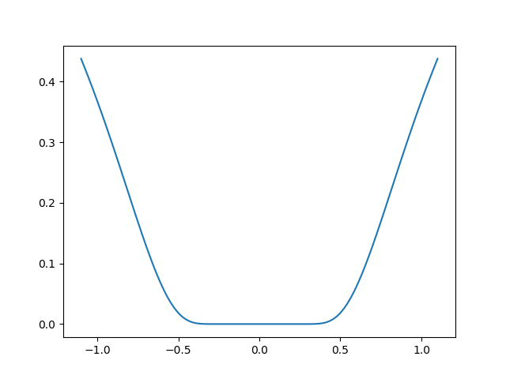
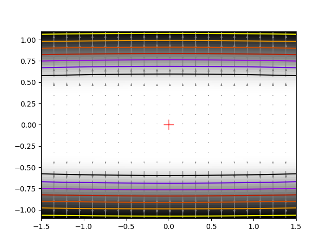

Note
Click here to download the full example code
2.7.4.5. Finding a minimum in a flat neighborhood¶
An excercise of finding minimum. This excercise is hard because the function is very flat around the minimum (all its derivatives are zero). Thus gradient information is unreliable.
The function admits a minimum in [0, 0]. The challenge is to get within 1e-7 of this minimum, starting at x0 = [1, 1].
The solution that we adopt here is to give up on using gradient or information based on local differences, and to rely on the Powell algorithm. With 162 function evaluations, we get to 1e-8 of the solution.
import numpy as np
from scipy import optimize
import matplotlib.pyplot as plt
def f(x):
return np.exp(-1/(.01*x[0]**2 + x[1]**2))
# A well-conditionned version of f:
def g(x):
return f([10*x[0], x[1]])
# The gradient of g. We won't use it here for the optimization.
def g_prime(x):
r = np.sqrt(x[0]**2 + x[1]**2)
return 2/r**3*g(x)*x/r
result = optimize.minimize(g, [1, 1], method="Powell", tol=1e-10)
x_min = result.x
Some pretty plotting
plt.figure(0)
plt.clf()
t = np.linspace(-1.1, 1.1, 100)
plt.plot(t, f([0, t]))
plt.figure(1)
plt.clf()
X, Y = np.mgrid[-1.5:1.5:100j, -1.1:1.1:100j]
plt.imshow(f([X, Y]).T, cmap=plt.cm.gray_r, extent=[-1.5, 1.5, -1.1, 1.1],
origin='lower')
plt.contour(X, Y, f([X, Y]), cmap=plt.cm.gnuplot)
# Plot the gradient
dX, dY = g_prime([.1*X[::5, ::5], Y[::5, ::5]])
# Adjust for our preconditioning
dX *= .1
plt.quiver(X[::5, ::5], Y[::5, ::5], dX, dY, color='.5')
# Plot our solution
plt.plot(x_min[0], x_min[1], 'r+', markersize=15)
plt.show()
- 
- 
Total running time of the script: ( 0 minutes 0.037 seconds)